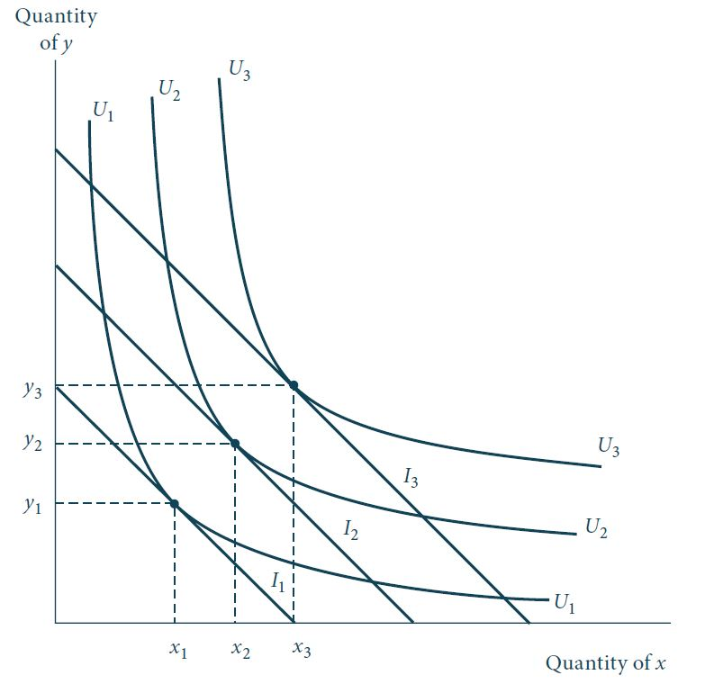
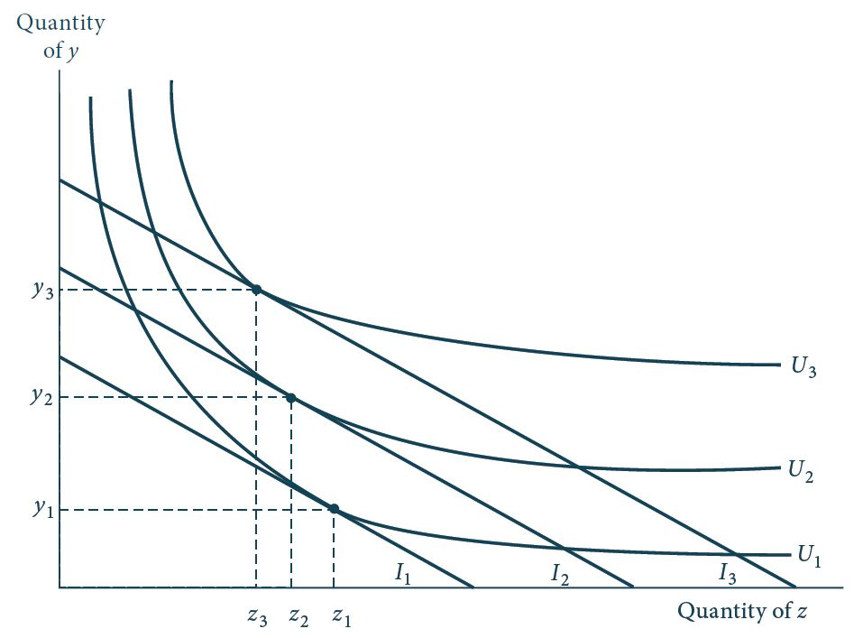
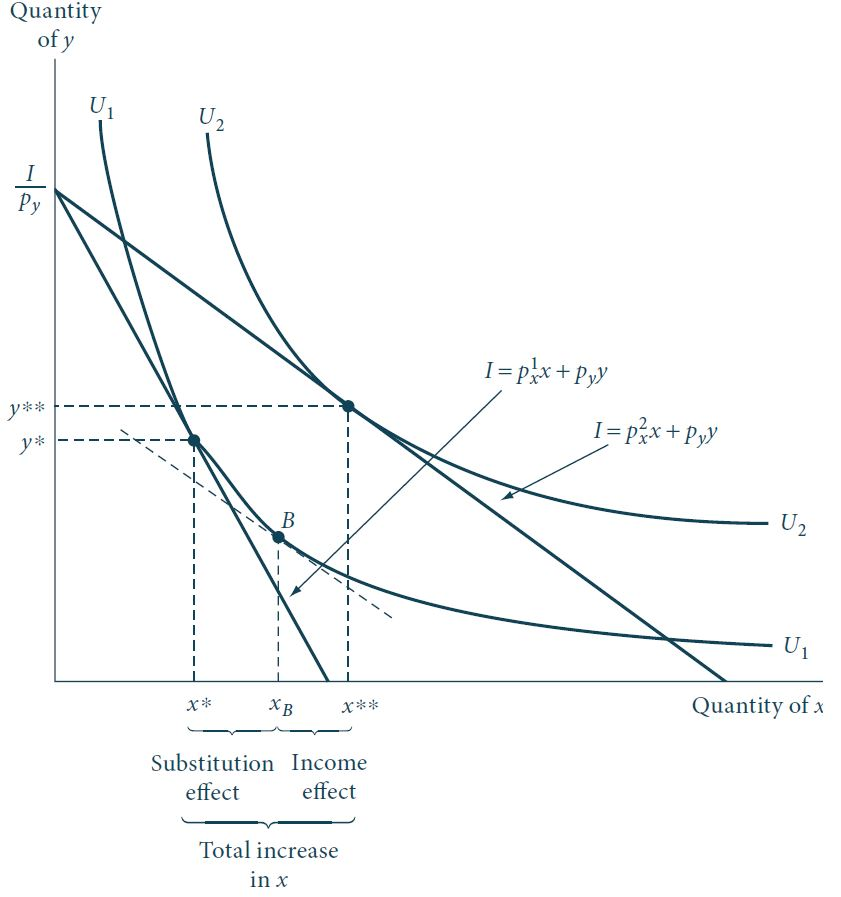
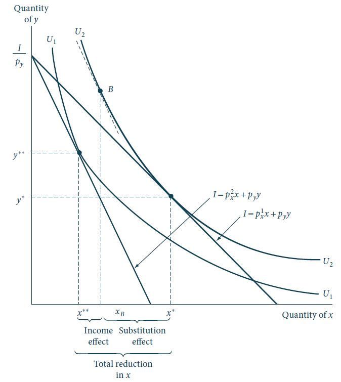

Efeitos renda e substituição
Funções demanda
Funções demanda Marshallianas
Como vimos na disciplina, até agora, geralmente será possível solucionar as condições necessárias de primeira ordem de um problema de maximização de utilidade para os níveis ótimos de \(x_1, x_2, \dots, x_n\) (e para o multiplicador de Lagrange, \(\lambda\)) como funções dos preços e da renda.
Matematicamente, essa solução pode ser expressa por um sistema de \(n\) funções de demanda Marshallianas da forma:
\[\begin{aligned} x_1^* &=& x_1(p_1, p_2, \dots, p_n, I), \nonumber \\ x_2^* &=& x_2(p_1, p_2, \dots, p_n, I), \nonumber \\ &\vdots& \nonumber \\ x_n^* &=& x_n(p_1, p_2, \dots, p_n, I). \end{aligned} \qquad(1)\]
Funções demanda Marshallianas
Uma vez conhecidos todos os preços, a renda e a forma funcional dessas funções demanda, é possível fazer “predições” do quanto de cada bem este consumidor irá consumir.
A notação na Equação 1 evidencia que os preços e a renda são variáveis exógenas, ou seja, são os parâmetros aos quais o consumidor não tem nenhum controle nesse estágio da análise.
Mudanças nesses parâmetros irão deslocar a restrição orçamentária e, consequentemente, alterar as escolhas ótimas deste indivíduo.
Nosso objetivo agora é estudar exatamente essas questões. Especificamente, \(\partial x/\partial I\) e \(\partial x/\partial p_x\) para um bem arbitrário \(x\).
Mais tarde na disciplina estudaremos o efeito-preço cruzado \(\partial x/\partial p_y\) para um par de bens arbitrário \(x\) e \(y\).
Homogeneidade
As funções demanda são homogêneas de grau zero em todos os preços e renda.
Portanto, variações nos preços e renda na mesma proporção não afetam as quantidades físicas dos bens demandados.
Matematicamente, temos: \[x_i^* = x_i(p_1, p_2, \dots, p_n, I) = x_i(tp_1, tp_2, \dots, tp_n, tI), \qquad \forall t>0.\]
Este resultado mostra que, em teoria, as demandas individuais não serão afetadas por um evento de inflação pura.
No caso de um processo inflacionário que não seja puro (i.e., se alguns preços aumentam mais rapidamente que outros) este não seria o caso.
Homogeneidade
Homogeneidade de grau zero das funções demanda é um resultado direto da hipótese de maximização de utilidade.
Funções demanda derivadas do problema de maximização de utilidade serão homogêneas.
Por sua vez, funções demanda que não sejam homogêneas não podem refletir maximização de utilidade - a não ser que os preços entrem diretamente na função utilidade do indivíduo (e.g., bens que apresentem o “efeito esnobe”).
Exemplos
Mostre que as funções demanda associadas à função utilidade do tipo Cobb-Douglas: \[U(x,y) = x^{0,3}y^{0,7},\] são homogêneas de grau 0.
Solução
As demandas de uma função Cobb-Douglas são dadas por:
- \(x^* = \frac{0,3I}{p_x}\)
- \(y^* = \frac{0,7I}{p_y}\)
Logo, temos por exemplo que: \(x(tp_x, tp_y, tI)=\frac{0,3tI}{t p_x}=x^*\)
Exemplos
Mostre que as funções demanda associadas à função utilidade do tipo CES: \[U(x,y) = \left(x^{0,5} + y^{0,5}\right)^2,\] são homogêneas de grau 0.

- Sorteio de um aluno(a) para apresentar este exercício na próxima aula.
Variações na renda
Efeitos de variações na renda
- À medida que o poder de compra de um indivíduo aumenta, é natural que a quantidade consumida de cada bem também aumente.

Efeitos de variações na renda
A Figura 1 ilustra o efeito de um aumento na renda sobre as quantidades ótimas consumidas dos bens \(x\) e \(y\).
À medida que a renda (poder de compra) aumenta de \(I_1\) para \(I_2\) e \(I_3\), a quantidade demandada do bem \(x\) (\(y\)) aumenta de \(x_1\) para \(x_2\) para \(x_3\) (\(y_1\) para \(y_2\) para \(y_3\)).
Note que as retas orçamentárias \(I_1\), \(I_2\) e \(I_3\) são paralelas, mostrando que apenas a renda está variando, e não os preços relativos de \(x\) e \(y\).
Se conectarmos as cestas de consumo ótimas para cada nível de renda, obtemos a chamada curva de renda-consumo.
Já a curva de Engel mostra a demanda de um bem em função da renda, mantendo os preços constantes.
Dado que a razão de preços relativos \(p_x/p_y\) permanece constante, a TMS é a mesma nos pontos \((x_1,y_1)\), \((x_2, y_2)\) e \((x_3, y_3)\).
Bens normais e bens inferiores
Na Figura 1 temos um caso em que as quantidades demandadas de \(x\) e \(y\) aumentam com o aumento na renda - \(\partial x/\partial I, \partial y/\partial I > 0.\)
Essa é considerada a situação usual e bens que exibem essa propriedade são denominados bens normais sobre o intervalo de variação de renda observada.
No entanto, para alguns bens, a quantidade ótima demandada pode decrescer quando a renda aumenta em alguns intervalos.
Um bem \(z\) para o qual temos que \(\partial z/\partial I<0\) é denominado um bem inferior.
Bens normais e bens inferiores
Figura 2: Curva de indiferença exibindo inferioridade. Fonte: Nicholson e Snyder (2019).
Bens normais e bens inferiores
Na Figura 2, o bem \(z\) é inferior pois sua quantidade demandada decresce à medida que a renda aumenta.
Note que as curvas de indiferença não precisam apresentar um formato “estranho” para exibir inferioridade.
As curvas de indiferença correspondentes aos bens \(y\) e \(z\) continuam a apresentar uma TMS decrescente.
O bem \(z\) é inferior em função da forma como se relaciona com os outros bens disponíveis, e não por causa de uma peculiaridade exclusiva a ele.
Bens normais e bens inferiores
Bens normais e bens inferiores
Um bem \(x_i\) para o qual \(\partial x_i/\partial I < 0\) sobre algum intervalo de variação da renda é denominado um bem inferior nesse intervalo.
Um bem \(x_i\) para o qual \(\partial x_i/\partial I \geq 0\) sobre algum intervalo de variação da renda é denominado um bem normal (ou não-inferior) nesse intervalo.
Variações no preço de um bem
Variações no preço de um bem
O efeito de uma variação no preço de um bem é mais complexo de ser analisado do que efeitos na variação da renda.
Isso porque, geometricamente, uma mudança de preços não só altera os interceptos da restrição orçamentária mas, também, sua inclinação.
Consequentemente, a nova escolha ótima derivada do problema de maximização de utilidade envolve não apenas a mudança para uma nova curva de indiferença mas, também, alterações em sua TMS.
Efeitos de uma redução no preço
Efeitos de uma redução no preço
Figura 3: Efeitos de uma redução em \(p_x\). Decomposição de Hicks. Fonte: Nicholson e Snyder (2019).
Efeitos de uma redução no preço
Inicialmente, o ponto que maximiza utilidade dada a restrição orçamentária é dado por \((x^*,y^*).\)
A restrição orçamentária inicial é \(I = p_x^1x + p_yy\). Após uma redução no preço do bem \(x\), a nova restrição orçamentária é dada por \(I = p_x^2x+p_yy\).
Ao novo nível de preços, o ponto que maximiza utilidade é dado por \((x^{**}, y^{**})\), onde a nova restrição orçamentária é tangente à curva de indiferença \(U_2\).
O movimento para este novo ponto ótimo pode ser analiticamente decomposto em dois efeitos.
Efeitos de uma redução no preço
Efeito substituição: a mudança na inclinação da restrição orçamentária motivaria uma mudança para o ponto \(B\). Se mantivermos, conceitualmente, a renda real (i.e., utilidade) constante - ou seja, mesma curva de indiferença - um preço relativo mais baixo do bem \(x\) causa a escolha ótima deste consumidor a se alterar de \((x^*,y^*)\) para o ponto \(B\).
Efeito renda: O deslocamento adicional do ponto \(B\) para o ponto \((x^{**}, y^{**})\) é analiticamente idêntico ao que vimos antes sobre mudanças na renda. Como o preço do bem \(x\) caiu, esse indivíduo dispõe de uma renda “real” mais alta e, portanto, pode atingir um nível de utilidade mais alta (\(U_2\)). Se \(x\) é um bem normal, sua demanda aumentará em resposta ao aumento no poder de compra deste consumidor.
Efeitos de uma redução no preço
De maneira geral, o resultado de uma redução no preço do bem \(x\) é um aumento na demanda deste bem.
Em termos práticos, este argumento “sequencial” não é observado. O ponto \(B\) nunca é observado, apenas as duas opções ótimas são refletidas no comportamento observável.
No entanto, a noção dos efeitos substituição e renda é analiticamente valioso já que mostra que uma mudança de preços afeta a quantidade demandada de \(x\) de duas maneiras conceitualmente distintas.
Isso terá um papel fundamental no nosso estudo sobre a teoria da demanda.
Efeitos de um aumento no preço
Figura 4: Efeitos de um aumento em \(p_x\). Fonte: Nicholson e Snyder (2019).
Efeitos de um aumento no preço
Neste caso, a restrição orçamentária se desloca para dentro, refletindo o aumento no preço do bem \(x\) de \(p_x^1\) para \(p_x^2\).
Novamente, o movimento do ponto inicial de maximização de utilidade \((x^*,y^*)\) para o novo ponto \((x^{**}, y^{**})\) também pode ser decomposto em dois efeitos.
Efeito substituição: Mesmo que este indivíduo pudesse permanecer na mesma curva de indiferença (\(U_2)\), ainda há um incentivo para substituir bem \(y\) por \(x\) e mover ao longo de \(U_2\) para o ponto \(B\).
Efeito renda: No entanto, como o poder de compra deste consumidor foi reduzido pelo aumento no preço do bem \(x\), deverá haver um deslocamento para um nível mais baixo de utilidade (\(U_1\)).
Note que, neste caso, os efeitos substituição e renda movem na mesma direção, fazendo com que a quantidade demandada de \(x\) diminua em resposta a um aumento no seu preço.
A lei da demanda. Se a demanda de um bem aumenta quando a renda aumenta, a demanda desse bem tem de diminuir quando o preço subir.
Efeitos de variações nos preços para bens inferiores
Nos casos que vimos até agora, os efeitos renda e substituição tendem a reforçar um ao outro.
Para uma redução nos preços, ambos fazem com que uma quantidade maior do bem seja demandada.
Já para um aumento nos preços, ambos fazem com que uma quantidade menor do bem seja demandada.
Esta análise é válida para o caso de bens normais (não-inferiores). No entanto, a possibilidade de bens inferiores complica a análise.
Neste caso, os efeitos renda e substituição funcionam em direções contrárias e, consequentemente, o efeito total de uma variação de preços é indeterminado.
Efeitos de variações nos preços para bens inferiores
Uma redução nos preços, por exemplo, sempre fará com que um indivíduo consuma mais de um bem por causa do efeito substituição.
No entanto, se o bem for inferior, o aumento no poder de compra causado pela redução de preços pode fazer com que haja uma redução na demanda por este bem.
Portanto, o resultado é indeterminado.
O efeito substituição tende a aumentar a quantidade demandada do bem inferior, enquanto o efeito renda tende a reduzir esta quantidade.
Em contraste com a situação de bens normais, neste caso não é possível fazer predições acerca da direção do efeito total de uma mudança em \(p_x\) sobre a quantidade ótima consumida de \(x\).
Paradoxo de Giffen
Se o efeito renda de uma variação de preços for forte o suficiente, a mudança nos preços e a mudança resultante na quantidade demandada podem ocorrer na mesma direção.
Este resultado, conhecido como paradoxo de Giffen, foi observado pelo economista inglês Robert Giffen no século XIX na Irlanda.
Paradoxo de Giffen
Na Irlanda do século XIX, frente a um aumento no preço das 🥔, reportou-se um aumento no consumo deste bem.
Este resultado peculiar pode ser explicado pela magnitude do efeito renda associado a um aumento nos preços das batatas.
As batatas, além de serem bens inferiores, também representavam uma parcela grande da renda dos irlandeses.
Portanto, um aumento no preço da batata reduziria substancialmente a renda real dos consumidores.
Os irlandeses seriam, então, forçados a reduzir o consumo de outros bens alimentícios considerados de luxo para adquirirem mais batatas.
Paradoxo de Giffen
Mesmo que essa interpretação dos eventos seja historicamente improvável, a possibilidade de um aumento na quantidade demandada em resposta a um aumento no preço de um bem passou a ser conhecida como paradoxo de Giffen.
O principal problema com essa interpretação dos eventos é que desconsidera a observação de Marshall de que tanto fatores de oferta quanto de demanda devem ser considerados na análise de variações de preços.
Se os preços das batatas subiram devido à crise na Irlanda, neste caso, a oferta também seria reduzida. Portanto, como seria possível um aumento na quantidade consumida?
Além disso, dado que muitos irlandeses eram produtores de batatas, o aumento no preço da batata significaria um aumento da renda real.
Referência: Robert Giffen and the Irish potato.
Resumo
Efeitos renda e substituição. A hipótese de maximização de utilidade sugere que, para bens normais, um aumento no preço de um bem leva a uma redução em sua quantidade consumida dado que:
o efeito subsituição faz com que uma quantidade menor seja consumida à medida que o indivíduo se move ao longo de uma curva de indiferença.
o efeito renda faz com que uma quantidade menor seja consumida dado que o aumento no preço reduz o poder de compra do consumidor.
Por fim, para o caso de bens inferiores, os efeitos renda e substituição operam em direções opostas e o efeito total é indeterminado.
📚 Bibliografia
NICHOLSON, W.; SNYDER C. Teoria microeconômica: Princípios básicos e aplicações. Cengage Learning Brasil, 2019. Disponível em: app.minhabiblioteca.com.br/#/books/9788522127030
VARIAN, H. R. Microeconomia: uma abordagem moderna. 9.ed. Rio de Janeiro: Elsevier, 2015. Disponível em: app.minhabiblioteca.com.br/books/9788595155107